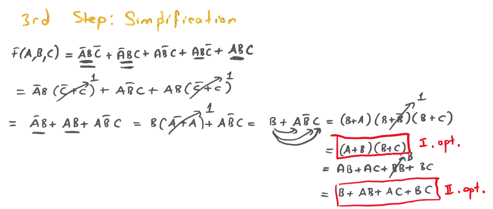

1Mantık tasarımı nedir?
Analiz: devre verilir, ne yaptığını bulursun (2. ders). Tasarım: ne yapması gerektiği söylenir, devreyi sen kurarsın (bu ders).
Gerçek hayatta problem hiçbir zaman formül olarak gelmez. "Bir kapı açıksa ışık yansın", "iki sayıyı topla" gibi sözlerle gelir. Mühendisin işi bu sözleri önce bir doğruluk tablosuna, sonra bir formüle, en son da bir devreye çevirmektir.
Doğruluk tablosundan formüle geçmenin garantili bir yolu var: kanonik formlar. Bunlar her tablo için mekanik olarak yazılabilen, hiç düşünmeden elde edilen formüllerdir. Uzun olurlar ama her zaman doğrudurlar. Sonra 2. dersteki teoremlerle kısaltırız.
Kanonik formların yapı taşları minterm ve maxterm. Hoca dersi bu iki kavramla açmış.
2Minterm
Minterm, doğruluk tablosunun tek bir satırında 1, diğer bütün satırlarda 0 olan çarpım terimidir.
1. dersin sonunda EXOR'un formülünü tablodan çıkarırken bunu zaten yaptık: 01 satırı için AB yazdık. Bu terim sadece A = 0, B = 1 iken 1 olur. İşte bu bir mintermdir.
Minterm nasıl yazılır?
- Satırdaki bütün değişkenleri çarpım olarak yaz (hiçbiri eksik olmayacak).
- Değeri 0 olan değişkenin üstüne çizgi koy, 1 olanı düz bırak.
Neden böyle? Bir çarpımın 1 olması için bütün çarpanların 1 olması gerekir. A = 0 olan satırda A = 1 olur. Böylece terim tam o satırda bütün çarpanları 1 yapar, başka hiçbir satırda yapamaz.
Mintermlere satır numarasıyla isim verilir: mi. Satır numarası, girişlerin ikili sayı olarak değeridir. A en soldaki (en değerli) bittir. Değişken sırası değişirse numaralar da değişir, o yüzden sınavda F(A, B, C) sırasına uy. Örneğin ABC = 101 → 5 → m₅ = ABC.
3 değişken için minterm ve maxterm tablosu
Hocanın tablosu, PDF s.1| Onluk | A | B | C | Minterm mi | Maxterm Mi |
|---|
Hocanın tablosunda orta sütunun başlığı "BCD Form". 0–7 arası için BCD ile düz ikili aynı olduğundan sorun yok, ama aslında bu sütun düz ikilidir.
m₆ nedir? 6'yı 3 bitlik ikiliye çevir: 110 → A = 1, B = 1, C = 0 → ABC.
ABC hangi minterm? Çizgili 0, düz 1: 011 → 3 → m₃.
3Maxterm
Maxterm, mintermin tam tersi: doğruluk tablosunun tek bir satırında 0, diğer bütün satırlarda 1 olan toplam terimidir.
Maxterm nasıl yazılır?
- Satırdaki bütün değişkenleri toplam (+) olarak yaz.
- Değeri 1 olan değişkenin üstüne çizgi koy, 0 olanı düz bırak. (Mintermin tersi!)
Neden böyle? Bir toplamın 0 olması için bütün terimlerin 0 olması gerekir. A = 1 olan satırda A = 0 olur. Böylece terim tam o satırda bütün parçaları 0 yapar.
Maxtermler büyük M ile gösterilir: Mi. Örnek: ABC = 101 → M₅ = A + B + C.
Aynı numaralı maxterm, mintermin tersidir: Mi = mi. Örnek: m₅ = ABC = A + B + C = M₅. Mantıklı: m₅ sadece 5. satırda 1, tersi sadece 5. satırda 0.
| Minterm (mi) | Maxterm (Mi) | |
|---|---|---|
| Biçim | Çarpım (AND) | Toplam (OR) |
| Hangi satırda özel? | Sadece kendi satırında 1 | Sadece kendi satırında 0 |
| 0 olan değişken | çizgili | düz |
| 1 olan değişken | düz | çizgili |
| ABC = 101 için | ABC | A + B + C |
4İki kanonik form: Σ ve Π
Hoca kırmızıyla yazmış: "There are 2 canonical forms". Her fonksiyonun iki kanonik yazılışı vardır.
1) Sum of Products (SOP): mintermlerin toplamı
Fonksiyonun 1 olduğu satırların mintermlerini topla. Her minterm kendi satırında 1 olduğu için toplam tam olarak o satırlarda 1 olur.
Kısaltması büyük sigma: F = Σ(2, 3, 6) demek F = m₂ + m₃ + m₆ demek. Bazen Σm(2, 3, 6) diye de yazılır.
2) Product of Sums (POS): maxtermlerin çarpımı
Fonksiyonun 0 olduğu satırların maxtermlerini çarp. Her maxterm kendi satırında 0 olduğu için, çarpım tam olarak o satırlarda 0 olur (bir çarpanın 0 olması çarpımı 0 yapar). Diğer satırlarda bütün maxtermler 1'dir, çarpım 1 olur.
Kısaltması büyük pi: F = Π(0, 1, 4, 5, 7) demek F = M₀ · M₁ · M₄ · M₅ · M₇ demek.
3 değişkende satır numaraları 0–7. Σ'da olmayan her numara Π'dedir, Π'de olmayan her numara Σ'dadır. Yani tamamlayıcı küme.
Σ(2, 3, 6) → eksik olanlar 0, 1, 4, 5, 7 → Π(0, 1, 4, 5, 7)
4 değişkende numaralar 0–15'tir. Aynı kural geçerli.
Π listesindeki numaralar fonksiyonun 0 olduğu satırlardır, 1 olduğu değil. Σ = 1'ler, Π = 0'lar.
Kanonik formda her terim bütün değişkenleri içerir (ABC gibi). Sadeleştirince terimler kısalır (B + AC gibi). Buna artık kanonik değil standart (ya da sadeleştirilmiş) SOP denir. Sınavda "write in canonical form" derse bütün değişkenleri yazmak zorundasın.
Bir de şu: F'nin mintermleri, F'nin maxterm numaralarıdır. F = Σ(2,3,6) ise F = Σ(0,1,4,5,7).
5Bir ifadeyi kanonik forma çevirmek
İfadede bazı terimler eksik değişkenle gelir. Onları tamamlamanın hilesi: eksik değişken X ise terimi (X + X) ile çarp. Bu ifade 1'e eşit olduğu için hiçbir şey değişmez.
F(A, B, C) = ABC + AB: her iki kanonik formda yaz
Hocanın örneği, PDF s.1- İlk terim ABC: üç değişken de var, bu zaten bir minterm. 110 → m₆.
- İkinci terim AB: C eksik. (C + C) ile çarp: AB(C + C) = ABC + ABC. Hocanın notundaki ok bu dağıtmayı gösteriyor.
- ABC → 011 → m₃. ABC → 010 → m₂. Hoca her terimin altına bitlerini (110, 011, 010) yazmış.
- SOP: F = ABC + ABC + ABC = m₆ + m₃ + m₂ = Σ(2, 3, 6).
- POS: 0–7 arasında Σ'da olmayanlar 0, 1, 4, 5, 7 → F = Π(0, 1, 4, 5, 7).
F = Σ(2, 3, 6) = Π(0, 1, 4, 5, 7)
Hoca Π'yi kısaltmayla bırakmış. Açık hali de istenebilir, o yüzden yazalım (her numarayı ikiliye çevir, 1'leri çizgili yaz):
F = (A + B + C)(A + B + C)(A + B + C)(A + B + C)(A + B + C)
Terimleri genişletmek yerine ifadenin doğruluk tablosunu çıkarıp 1 olan satırları Σ'ya, 0 olanları Π'ye yazabilirsin. İki yol aynı sonucu verir. Biri ile çözüp diğeri ile sağlama yapmak en güvenlisi.
İfade toplamlar çarpımı biçimindeyse ve bir toplam teriminde X eksikse, terime XX (= 0) ekle ve dağılmanın ikinci halini uygula. Örnek (3 değişken): A + B = A + B + CC = (A + B + C)(A + B + C) → M₀M₁.
6Tasarımın 4 adımı
Hoca alarm örneğini dört adımda çözmüş. Her tasarım sorusu için bu tarifi kullan.
- Hazırlık: Girişleri ve çıkışları belirle, 0 ve 1'in neyi temsil ettiğini yaz. Hoca "Alarm: On → True → 1, Off → False → 0" ve "Door: On (açık) → 1, Off → 0" diye yazmış. Bu adımı atlama, puan getirir.
- 1st Step: doğruluk tablosu. Her giriş kombinasyonu için problemin söylediğini uygula, çıkışı yaz.
- 2nd Step: kanonik form. 1 olan satırların mintermlerini topla: F = Σ(…), sonra açık halini yaz.
- 3rd Step: sadeleştirme. 2. dersin teoremleriyle formülü kısalt. (4. dersteki Karnaugh haritaları bu adımı çok kolaylaştıracak.)
- 4th Step: devre şeması. Sadeleşmiş formülü kapılarla çiz.
7Örnek: kapı alarmı
Problem
Hocanın örneği, PDF s.1–2Üç kapı var: A, B, C. Bir mantık devresi kapılara bakıp bir alarmı kontrol ediyor. "If at least two of the doors are open or only door B is open the alarm should be on." Yani en az iki kapı açıksa veya sadece B kapısı açıksa alarm çalmalı.
Hoca "or" kelimesini daire içine almış: iki koşuldan biri sağlanırsa yeter.
1st Step: doğruluk tablosu
Her satır için iki soruyu sor: "En az iki kapı açık mı?" ve "Sadece B mi açık?" Biri evetse F = 1.
| A | B | C | Açık kapı sayısı | Neden? | F | Minterm |
|---|---|---|---|---|---|---|
| 0 | 0 | 0 | 0 | hiçbiri açık değil | 0 | m₀ |
| 0 | 0 | 1 | 1 | sadece C açık | 0 | m₁ |
| 0 | 1 | 0 | 1 | sadece B açık | 1 | m₂ |
| 0 | 1 | 1 | 2 | en az iki | 1 | m₃ |
| 1 | 0 | 0 | 1 | sadece A açık | 0 | m₄ |
| 1 | 0 | 1 | 2 | en az iki | 1 | m₅ |
| 1 | 1 | 0 | 2 | en az iki | 1 | m₆ |
| 1 | 1 | 1 | 3 | en az iki | 1 | m₇ |
2nd Step: kanonik form
1 olan satırlar 2, 3, 5, 6, 7 (hoca bunları kırmızıyla daire içine almış):
3rd Step: sadeleştirme (hocanın yolu)
- Hoca altlarını çizerek eşleştirmiş: 1. ile 2. terimde AB, 4. ile 5. terimde AB ortak.
- = AB(C + C) + ABC + AB(C + C) = AB + ABC + AB
- AB + AB = B(A + A) = B. Yani F = B + ABC.
- Dağılmanın ikinci halini (X + YZ = (X + Y)(X + Z)) iki kez uygula: önce B + (AB)·C = (B + AB)(B + C), sonra B + AB = (B + A)(B + B). Sonuç: (B + A)(B + B)(B + C).
- B + B = 1: F = (A + B)(B + C). Hocanın I. seçeneği.
- Parantezleri açarsak: AB + AC + BB + BC = B + AB + AC + BC (BB = B). Hocanın II. seçeneği.

B + AB + AC + BC ifadesinde AB ve BC terimleri B tarafından yutulur (B + AB = B, B + BC = B). Geriye kalan:
Aynı sonuca 3. adımdan doğrudan da gidebilirdin: B + B(AC) = B + AC (ters değişkenli yutma). Bu en kısa hal: 1 AND + 1 OR = 2 kapı. Bu arada I. seçenek de aslında aynı şey: dağılma 2 ile (B + A)(B + C) = B + AC. Yani I. seçenek en sade POS, B + AC en sade SOP. I. seçenek 2 OR + 1 AND = 3 kapı. Sınavda "simplify" denirse B + AC yaz. Hocanın iki cevabı da doğru fonksiyonu verir, sadece daha uzun.
Sözle sağlama: "B açıksa alarm çalar (tek başına ya da başkasıyla). B kapalıysa sadece A ve C ikisi birden açıkken çalar." Bu tam olarak problemin söylediği.
F'nin 0 olduğu satırlar 0, 1, 4: F = Π(0, 1, 4) = (A + B + C)(A + B + C)(A + B + C). İlk çarpanı iki kez kullan (tekrar kuralı). Her ikili (X + C)(X + C) = X + CC = X + 0 = X kalıbına uyar (dağılma 2): (A + B + C)(A + B + C) = A + B ve (A + B + C)(A + B + C) = B + C. Sonuç: (A + B)(B + C). POS ile başlamak POS biçiminde bir sonuç verir.
4th Step: devre şeması
Hoca I. seçeneği çizmiş: iki OR kapısı (A+B ve B+C) ve bunları birleştiren bir AND. B kablosu noktadan dallanıp iki OR'a da gidiyor.
Kapıları aç-kapat, alarmı izle
8Yarım toplayıcı (half adder)
Bilgisayarın her toplama işlemi küçük toplayıcı devrelerle yapılır. En basiti iki biti toplayan yarım toplayıcı.
İki biti toplarsan sonuç 0, 1 ya da 2 olabilir. 2'yi yazmak için iki bit gerekir (10₂). Bu yüzden yarım toplayıcının iki çıkışı vardır:
- S (Sum, toplam): sonucun sağdaki biti, yani o sütuna yazılan rakam.
- Cout (Carry out, elde): sola taşan bit.
Hoca bunu yanına küçük bir işlemle göstermiş: 1 + 1 = 10. Soldaki 1 elde (carry), sağdaki 0 sonuç (result).
Hocanın notunda "S = A+B output" yazıyor. Burada + aritmetik toplama demek, "S, A ile B'nin toplamının biti" anlamında. Boole cebirindeki VEYA değil. Hemen aşağıda göreceğin gibi S aslında A ⊕ B.
| A | B | S | Cout | Ondalık toplam |
|---|---|---|---|---|
| 0 | 0 | 0 | 0 | 0 |
| 0 | 1 | 1 | 0 | 1 |
| 1 | 0 | 1 | 0 | 1 |
| 1 | 1 | 0 | 1 | 2 = 10₂ |
Tablodan formülleri okuyalım:
- S sütunu 0, 1, 1, 0: bu EXOR'un tablosu. S = AB + AB = A ⊕ B.
- Cout sütunu 0, 0, 0, 1: bu AND'in tablosu. Cout = AB.
Devresi: bir XOR ve bir AND kapısı. Hoca bunu kesik çizgili bir kutu içine alıp "HA" diye adlandırmış ve tek bir blok olarak (iki giriş, iki çıkış) çizmiş. Büyük devrelerde iç yapıyı her seferinde çizmek yerine bu blokları kullanırız.
Yarım toplayıcı
Neden "yarım"? Çünkü sadece iki bit topluyor. Çok bitli sayıları toplarken sağdaki sütundan gelen eldeyi de eklemek gerekir. Yarım toplayıcının buna girişi yok. O işi tam toplayıcı yapar.
9Tam toplayıcı (full adder)
Tam toplayıcı üç biti toplar: A, B ve sağdaki sütundan gelen elde Cin (carry in).
1. derste alt alta toplama yaparken her sütunda tam olarak bunu yaptın: iki rakam + yukarıdan gelen elde. Üç bitin toplamı 0 ile 3 arasındadır, yine iki çıkışla (Cout S) yazılır.
| A | B | Cin | 1'lerin sayısı | S | Cout |
|---|---|---|---|---|---|
| 0 | 0 | 0 | 0 | 0 | 0 |
| 0 | 0 | 1 | 1 | 1 | 0 |
| 0 | 1 | 0 | 1 | 1 | 0 |
| 0 | 1 | 1 | 2 | 0 | 1 |
| 1 | 0 | 0 | 1 | 1 | 0 |
| 1 | 0 | 1 | 2 | 0 | 1 |
| 1 | 1 | 0 | 2 | 0 | 1 |
| 1 | 1 | 1 | 3 | 1 | 1 |
"1'lerin sayısı" sütununa bak: S, 1'lerin sayısı tek ise 1 (çok girişli XOR'un kuralı). Cout, en az iki tane 1 varsa 1. Bu ikincisi, alarm örneğindeki "en az iki kapı açık" koşulunun aynısı. Bu fonksiyona çoğunluk (majority) fonksiyonu denir.
S'nin formülü
Hocanın çözümü, PDF s.3–4- 1 olan satırlar 1, 2, 4, 7: S = A BCin + ABCin + AB Cin + ABCin. Hoca Cin'i düz olanların altını iki çizgiyle, çizgili olanların altını tek çizgiyle işaretlemiş.
- Cin düz olanlar (1. ve 4.) ile çizgili olanları (2. ve 3.) ayrı grupla: S = Cin(A B + AB) + Cin(AB + AB).
- Kalıpları tanı: A B + AB = A ⊙ B ve AB + AB = A ⊕ B. S = Cin(A ⊙ B) + Cin(A ⊕ B).
- Hocanın x taktiği: x = A ⊕ B de. Bir ifadenin tamamına tek harf vermek serbesttir: x her satırda 0 ya da 1 olan bir değerdir, yani bir değişken gibi davranır. Amaç kalıbı görünür kılmak. XNOR, XOR'un tersi olduğu için A ⊙ B = x.
- S = Cinx + Cinx. Bu da bir XOR kalıbı: = Cin ⊕ x.
- x yerine A ⊕ B koy: S = Cin ⊕ (A ⊕ B). XOR da AND ve OR gibi değişme ve birleşme özelliğine sahiptir (tabloyla kontrol edebilirsin: hangi sırayla yazarsan yaz "1'lerin sayısı tekse 1" kuralı değişmez). Bu yüzden parantez ve sıra önemsiz.
S = Cin ⊕ A ⊕ B (yani A ⊕ B ⊕ Cin)
Cout'un formülü
Hocanın çözümü, PDF s.4- 1 olan satırlar 3, 5, 6, 7: Cout = ABCin + ABCin + ABCin + ABCin.
- Hoca oklarla eşleştirmiş: 1. ve 4. terimde BCin ortak, 2. ve 3. terimde A ortak.
- Cout = BCin(A + A) + A(BCin + BCin)
- A + A = 1 ve parantez içi bir XOR: BCin + BCin = B ⊕ Cin.
Cout = BCin + A(B ⊕ Cin)
Kitaplarda Cout genelde AB + Cin(A ⊕ B) ya da çoğunluk fonksiyonu olarak AB + ACin + BCin diye yazılır. Üçü de aynı fonksiyondur (doğruluk tabloları birebir aynı). Hoca eşleştirmeyi farklı terimlerle yaptığı için farklı bir yazılışa ulaşmış. Sınavda hangisini yazsan doğrudur.
AB + Cin(A ⊕ B) yazılışının güzel bir yanı var: A ⊕ B kapısı S için de kullanılıyor. Böylece tam toplayıcı iki yarım toplayıcı ve bir OR kapısı ile kurulabilir.
Hocanın tam toplayıcı devresi: S için 3 girişli bir XOR. Cout için B ⊕ Cin'i A ile VE'leyen bir AND, BCin için ayrı bir AND ve ikisini birleştiren bir OR. Hoca girişleri dikey hatlar (bus) halinde çizmiş, yatay kablolar dikey hatların üstünden köprüyle geçiyor.
Hocanın çiziminde aslında 6 dikey hat var: her girişin yanına küçük bir NOT kapısıyla tersini (A, B, Cin) de hat olarak eklemiş. Bu devrede ters hatlar hiç kullanılmıyor, bütün kapılar düz A, B, Cin hatlarına bağlı. Bu, "her girişin hem düzü hem tersi hazır olsun" alışkanlığından gelir: kanonik SOP devrelerinde ters hatlar gerekir. Sitedeki çizimde kullanılmayan ters hatlar gösterilmedi.
Tam toplayıcı (hocanın devresi)
103 bitlik toplayıcı
"Let's design a 3-bit adder." Tam toplayıcıları yan yana dizip her birinin eldesini solundakine bağlarsan istediğin uzunlukta sayıları toplayabilirsin.
Kâğıtta alt alta toplama yaparken ne yapıyorsun? En sağdaki sütunu topla, eldeyi sola ver, bir sonraki sütunu eldeyle birlikte topla… Bu devre tam olarak bunu yapıyor:
- Her sütun (bit) için bir tam toplayıcı (FA) var. FA₀ en sağdaki (en değersiz) biti toplar.
- FA₀'ın Cin'i toprağa (GND, yani 0) bağlı, çünkü en sağ sütuna gelen bir elde yok. Hoca Cin0'ı toprak sembolüne bağlamış.
- Her FA'nın Cout'u solundaki FA'nın Cin'ine bağlı: Cout0 → Cin1, Cout1 → Cin2.
- En soldaki FA'nın Cout2'si OF (overflow) olarak çıkar. Sonuç 3 bite sığmadıysa bu bit 1 olur.
- Bu tanım işaretsiz sayılar için. Sayılar 2's complement işaretli ise (1. ders, 7. bölüm) taşma Cout2 ile değil, işaret bitine giren ve çıkan eldenin farklı olmasıyla anlaşılır. Örnek: 011 + 011 = 110. Cout2 = 0, ama +3 + 3 = +6 işaretli 3 bitlik aralığa (−4…+3) sığmaz: işaret bitine giren elde 1, çıkan 0.
Eldenin sağdan sola bir dalga gibi yayılmasından dolayı bu yapıya ripple carry adder (dalgalı elde toplayıcı) denir. Her FA eldeyi sağındakinden beklemek zorunda olduğu için n bitlik toplayıcıda gecikme n katına çıkar. Ripple carry basit ama yavaştır.
3 bitlik toplayıcı: A ve B'nin bitlerine bas
Örnek: 011 + 110 (3 + 6)
- FA₀: A₀ = 1, B₀ = 0, Cin = 0 (GND). Toplam 1 → S₀ = 1, C₀ = 0.
- FA₁: A₁ = 1, B₁ = 1, Cin = C₀ = 0. Toplam 2 → S₁ = 0, C₁ = 1.
- FA₂: A₂ = 0, B₂ = 1, Cin = C₁ = 1. Toplam 2 → S₂ = 0, C₂ = 1.
- OF = C₂ = 1. Sonuç 3 bite sığmadı.
OF S₂S₁S₀ = 1001 = 9. Kontrol: 3 + 6 = 9. 3 bitle en fazla 7 yazılabildiği için OF = 1.
Bu toplayıcıya birkaç kapı ekleyerek çıkarma da yaptırılabilir. 1. dersteki "toplayarak çıkarma" fikri burada bir devreye dönüşüyor. Nasıl yapıldığını 6. derste göreceksin.
11Özet kâğıdı
Minterm ve maxterm
- mi: çarpım, sadece i. satırda 1
- Mi: toplam, sadece i. satırda 0
- Minterm: 0 → çizgili, 1 → düz
- Maxterm: 1 → çizgili, 0 → düz
- Mi = mi
Kanonik formlar
- SOP: F = Σ(1 olan satırlar)
- POS: F = Π(0 olan satırlar)
- Σ ve Π listeleri birbirinin tamamlayıcısı
- Eksik değişken X: terimi (X + X) ile çarp (SOP), toplam terimine XX ekle (POS)
- Kanonik: her terimde bütün değişkenler var
Tasarım adımları
- 0: giriş/çıkış ve 0/1 anlamlarını tanımla
- 1: doğruluk tablosu
- 2: F = Σ(…) ve açık hali
- 3: sadeleştir
- 4: devreyi çiz
- Alarm: F = B + AC
Toplayıcılar
- HA: S = A ⊕ B, Cout = AB
- FA: S = A ⊕ B ⊕ Cin
- FA: Cout = BCin + A(B ⊕ Cin)
- = AB + Cin(A ⊕ B) = AB + ACin + BCin
- S: 1'ler tekse 1. Cout: en az iki 1 varsa 1
n bitlik toplayıcı
- n tane FA yan yana
- Cin0 = 0 (GND)
- Cout,i → Cin,i+1
- Son Cout = OF (taşma)
İngilizce–Türkçe terimler
- minterm / maxterm
- en küçük terim / en büyük terim
- canonical form
- kanonik (standart, tam) biçim
- sum of products (SOP)
- çarpımlar toplamı
- product of sums (POS)
- toplamlar çarpımı
- half adder (HA)
- yarım toplayıcı
- full adder (FA)
- tam toplayıcı
- carry in / carry out
- gelen elde / giden elde
- ripple carry adder
- dalgalı elde toplayıcı
- majority function
- çoğunluk fonksiyonu
- circuit diagram
- devre şeması
12Alıştırmalar ve test
Önce kâğıtta çöz, sonra çözüme bak.
Çözümlü alıştırmalar
- 3 değişken için m₅ ve M₂'yi yaz.
Çözümü göster
5 = 101 → m₅ = ABC. 2 = 010 → maxtermde 1 çizgili: M₂ = A + B + C.
- AB C hangi mintermdir?
Çözümü göster
Düz 1, çizgili 0: 100 → 4 → m₄.
- F(A,B,C) = Σ(0, 2, 5) ise Π gösterimi nedir?
Çözümü göster
0–7 arasında eksik olanlar: Π(1, 3, 4, 6, 7).
- F(A,B,C) = A + BC fonksiyonunu Σ ile yaz.
Çözümü göster
A tek başına: A = 1 olan bütün satırlar (4, 5, 6, 7). BC: B = 0, C = 1 olan satırlar (001 = 1, 101 = 5). Birleşim: Σ(1, 4, 5, 6, 7). Cebirsel yoldan: A = A(B + B)(C + C) açılarak aynı sonuç bulunur.
- F = Σ(1, 2) fonksiyonunu kanonik SOP olarak açık yaz ve tanıdık bir kapıyla ifade et. (2 değişken: A, B)
Çözümü göster
1 = 01 → AB, 2 = 10 → AB. F = AB + AB = A ⊕ B (XOR).
- Tasarla: üç oylayıcı (A, B, C) var. Çoğunluk evet derse (en az ikisi 1) karar kabul edilsin (F = 1). F'yi bul ve sadeleştir.
Çözümü göster
F = Σ(3, 5, 6, 7). ABC + ABC + ABC + ABC. ABC'yi üç kez kullan: (ABC + ABC) + (ABC + ABC) + (ABC + ABC) = BC + AC + AB. Bu tam toplayıcının Cout'u ile aynı!
- Yarım toplayıcıda A = 1, B = 1 iken S ve Cout kaçtır?
Çözümü göster
1 + 1 = 10₂ → S = 0, Cout = 1.
- Tam toplayıcıda A = 1, B = 0, Cin = 1 iken S ve Cout kaçtır?
Çözümü göster
Toplam 2 = 10₂ → S = 0, Cout = 1. Formülle: S = 1 ⊕ 0 ⊕ 1 = 0. Cout = BCin + A(B ⊕ Cin) = 0 + 1·(0 ⊕ 1) = 1.
- 3 bitlik toplayıcıda 101 + 011 hesapla. Her FA'nın eldesini yaz.
Çözümü göster
FA₀: 1 + 1 + 0 = 2 → S₀ = 0, C₀ = 1. FA₁: 0 + 1 + 1 = 2 → S₁ = 0, C₁ = 1. FA₂: 1 + 0 + 1 = 2 → S₂ = 0, C₂ = 1. Sonuç 1000 (OF = 1) = 8 = 5 + 3.
- 4 bitlik bir toplayıcı için kaç tam toplayıcı gerekir? En sağdakinin Cin'i nereye bağlanır?
Çözümü göster
4 tam toplayıcı. En sağdakinin Cin'i GND'ye (0) bağlanır. İstersen en sağdaki için bir yarım toplayıcı da kullanabilirsin, çünkü oraya elde gelmiyor.